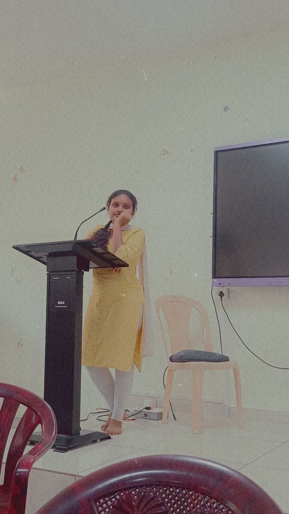

Web Development Intern
Hello, I'm
Nandini Gurram
I’m learning to build clear, useful web experiences with thoughtful details and dependable foundations.
Explore my projects
A little about my work01 — About me
Curious by nature.
Building one project at a time.
This portfolio brings together my current practice projects and the technologies I’m exploring. I’m interested in turning ideas into accessible, responsive interfaces and improving through hands-on work.
02 — Skills
Tools I’m practicing
Editable examples; update these as your experience grows.
- HTML
- CSS
- JavaScript
- Python
- Problem Solving
03 — Selected projects
Built as part of OIBSIP Level 1
04 — Contact
Let’s connect.
Contact details have not been provided yet.
← Back to the OIBSIP dashboard